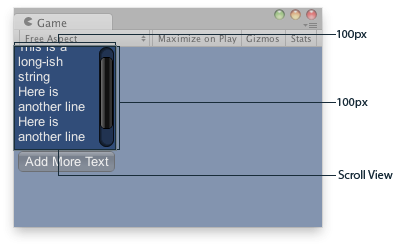

GUILayout.EndScrollView
public static void EndScrollView();
Description 描述
End a scroll view begun with a call to BeginScrollView.
See Also: GUILayout.BeginScrollView

Scroll View in the Game View..
using UnityEngine;
public class ExampleScript : MonoBehaviour { // The variable to control where the scrollview 'looks' into its child elements. Vector2 scrollPosition;
// The string to display inside the scrollview. 2 buttons below add & clear this string. string longString = "This is a long-ish string";
void OnGUI() { // Begin a scroll view. All rects are calculated automatically - // it will use up any available screen space and make sure contents flow correctly. // This is kept small with the last two parameters to force scrollbars to appear. scrollPosition = GUILayout.BeginScrollView( scrollPosition, GUILayout.Width(100), GUILayout.Height(100));
// We just add a single label to go inside the scroll view. Note how the // scrollbars will work correctly with wordwrap. GUILayout.Label(longString);
// Add a button to clear the string. This is inside the scroll area, so it // will be scrolled as well. Note how the button becomes narrower to make room // for the vertical scrollbar if (GUILayout.Button("Clear")) longString = "";
// End the scrollview we began above. GUILayout.EndScrollView();
// Now we add a button outside the scrollview - this will be shown below // the scrolling area. if (GUILayout.Button("Add More Text")) longString += "\nHere is another line"; } }